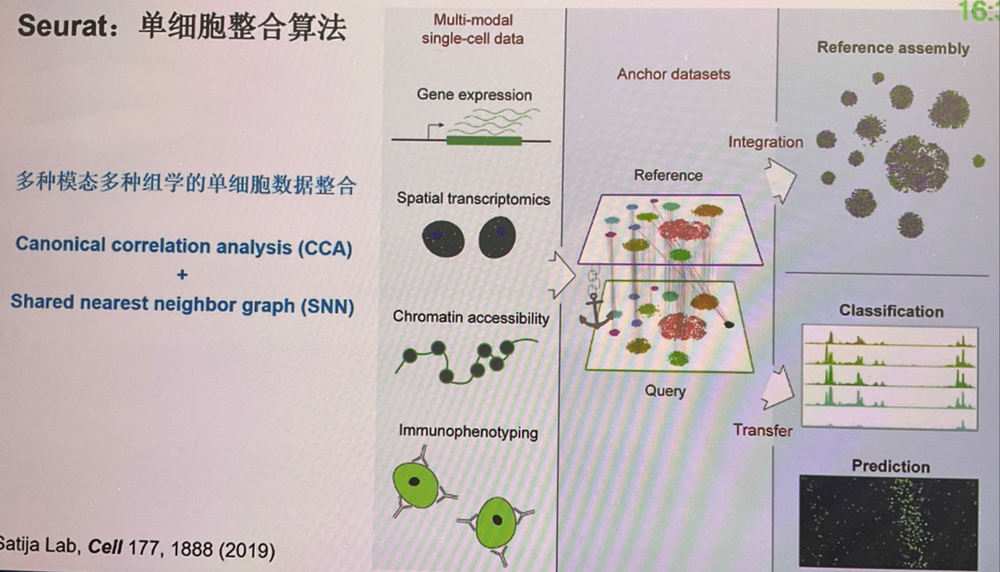

home..
2023 Ticsso 单细胞及空间组学大会
zying / April 2023 (70 Words, 1 Minutes)
Lectures
Development and Application of single-cell spacial multi-omics methods
华中农业大学，曹罡
 Spatially resolve transcriptomes-Nex Generation Tools for Tissue Exploration (空转方法综述）
主要开发分析技术，应用于神经-免疫的研究
Spatially resolve transcriptomes-Nex Generation Tools for Tissue Exploration (空转方法综述）
主要开发分析技术，应用于神经-免疫的研究
 , co-detection of DNA, RNA, Protein
, co-detection of DNA, RNA, Protein- FISH+空间转录组：多色FISH，擦除荧光信号之后再标记，通过FISH检测splicing variation
- 高通量In situ sequencing (可以耦合各种成像技术）
- Neurotransmitter
- 钙成像
- 拉曼成像
- 电压成像
- 3D in situ sequencing: 透明化，自动化FISH
- Connectome: combine retro-virus, adding barcode (projectome 1.0), retro-seq (测retro barcode的scRNA-seq), 可以得到基因表达加投射信息，有望联合patch的数据
)
单细胞表观多组学技术及应用
北京大学，何爱彬
CoBATCH同CUT&TAG类似

- 提到抗体标记后不适合做ChIP
- 用histone modification和TF信息做pseudo-trajectory
- dynamic is important, motif changes，pioneering chromatin states
- CUT&TAG这种类型技术，酶比抗体更重要
- Perscective
- 多种修饰到同一个细胞
- cfEpiTracing, cfDNA-methylation, a pannel histone modification
- deconvolution tissue sample
基于变分自编码器的Bulk转录组数据单细胞空间重构算法Bulk2Space
浙江大学长江三角洲智慧绿洲创新中心 Bulk2Space没听到 scSpace
人类胚胎细胞发育图谱的构建
中国海洋，万乘基因，施威扬
- 人类细胞图谱计划（Human Cell Atlas)
-
- 切割成了不同发育部分
- 人类早期胚胎细胞类型数目及组成
- 发育生物学基础的细胞分类与注释
- 胚胎细胞类群空间分布，single center
- 解析经典单细胞模型
- A-P axis
- D-V axis
- 肢体发育
- 数据整合
- 难以整合，分化细胞丢失
- 更多以时间点数据整合发育轨迹
- 展望
- 表观多组学
- 通量
- 样本制备与保存 （固定，膜，应用与临床）
- 空间
单细胞线粒体基因突变分析
中山大学，徐锦 线粒体瓶颈效应，做lineage分析
空间转录组分析算法比较与挖掘
北生所，黎斌
 空转分类：
空转分类：
- 基于测序：不是单细胞分辨率
- 基于成像：不是全转录组，受光学分辨率限制

 非凸优化避开收敛到局部最小值的问题，能得到全局最小值
非凸优化避开收敛到局部最小值的问题，能得到全局最小值
 各种分析算法提出，需要比较与数据挖掘，benchmarking工作
各种分析算法提出，需要比较与数据挖掘，benchmarking工作

- 收集数据，模拟数据
- 收集分析方法
- 评价方法
- pearson: 计算结果和标准结果的相关性
- SSIM 结构相似度：评价图像的相似性
- Jenson-Shannon散度，与KL散度类似：评价误差
- MSE: 均方根误差
- 合并成rank score
- 下采样评价robust
- 伪造convolution数据评价deconvolution效果
- 模拟数据集（单细胞模拟spacial）
- 结论
- 各数据集的质量对算法影响大，稀疏度越大（dropout）对结果影响越大
- Normalization很重要
- 非凸优化预测空间结构效果好，概率模型deconvolution效果好
- Perspective
- Spacial domain的分析
- increase resolution：借鉴图像处理算法
- 三位重构：解决旋转，形变等图像问题
- Cell-Cell communication